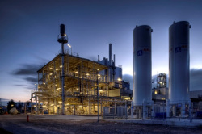
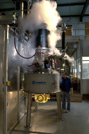
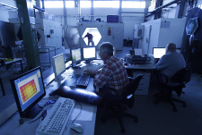

Prior to the Workshop presentations on Monday, May 12, the seminar participants will have the opportunity to visit facilities of the Karlsruhe Institute of Technology.
The trip is scheduled as follows::
| 8:15 | Boarding the bus: Hotel Kübler, Karlsruhe |
| 8:45 | Arrival to KIT Campus North |
| 9:00 | Tour over the bioliq® facility |
| 10:00 | Visit to the high power gyrotron test stand |
| 10:30 | Visit to the HEPHAISTOS Experimental Center |
| 11:15 | Arrival at the Seminar venue |
The Karlsruhe bioliq® ProcessThe bioliq® pilot plant will cover the process chain required for producing customized fuels from residual biomass. Being mainly synthesized from dry straw or wood, the biomass to liquid fuels offer environmental and climatic benefits through clean combustion. The integrative process chain, moreover, enables production of synthesis gas and chemicals.For more info, visit bioliq web site. |
 |
Gyrotron Test FacilityPart of the Fusion Energy Program at KIT is the design and development of high power microwave sources. Those are used in experiments on controlled nuclear fusion in magnetic confined plasmas for plasma ignition, plasma heating and plasma stabilization. Such gyrotron sources operate at frequencies in the hundred GHz range and at power levels up to 2 MW. |
 |
HEPHAISTOS Experimental Center (HEC)The modular microwave product line HEPHAISTOS represents a radical innovation in the field of heating and process systems for material treatment. These chamber systems provide an excellent homogeneous field distribution. The generation of uniform and homogeneous fields at 2.45 GHz over a wide area has been a key problem of industrial microwave technology. There are several HEPHAISTOS microwave systems (up to 7500 l in volume) available for industrial process development. For more info, visit HEC on the web. |
 |
KIT will require the names of the visitors to their facilities to be available one week ahead of the tour. Therefore, only those seminar participants who register for the trip on or before May 2, 2014 will be permitted to enter the KIT campus.